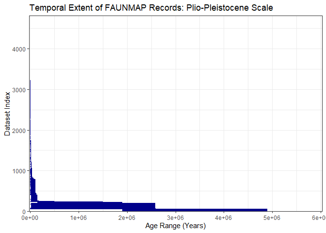
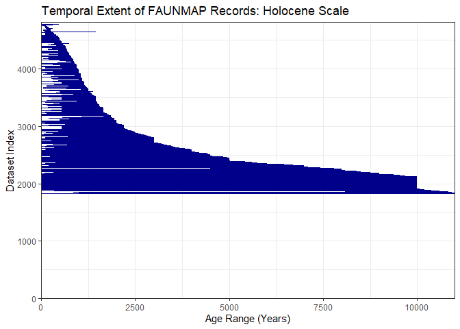
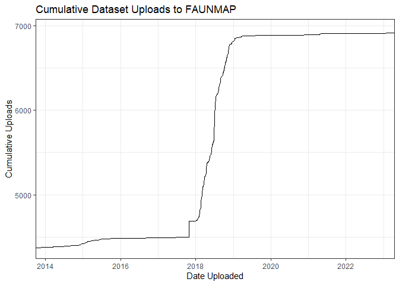
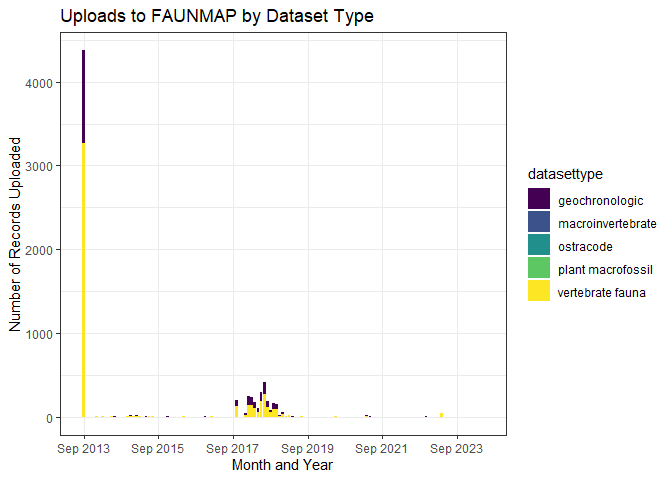
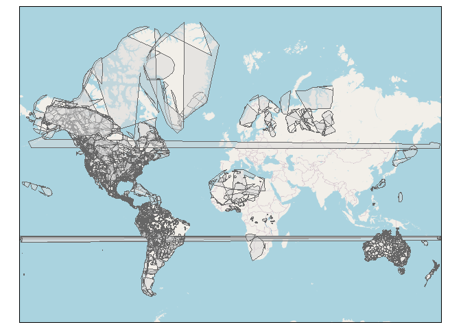

FAUNMAP is one of the original Neotoma Constituent Databases. FAUNMAP was originally developed by Russ Graham and Ernest Lundelius in the early 1990s with funding from the NSF. FAUNMAP initially aggregated mammalian occurrences from across the United States for the past 50,000 years. In the late 1990s, the temporal reach of the database was extended to encompass the past five million years. FAUNMAP does contain some data on vertebrate taxa outside mammals (as well as a few plant and invertebrate datasets!), but mammals are its primary focus.
FAUNMAP currently contains 6956 datasets from 4847 sites from the locations mapped below.
The temporal extent of the FAUNMAP database is a little bimodal: about half the records have a plio-pleistocene time scale, and the other half have a more holocene time scale. (And only 4815 of the 6950 datasets have any time range associated with them at all.)

Most FAUNMAP datasets are vertebrate fauna or geochronologic, with a few outlying dataset kinds.
In 2018, thousands of new datasets were uploaded to FAUNMAP.

Prior to 2018, the researcher associated with the most FAUNMAP datasets was John H. Brumley, who had 29 datasets in the database.
Currently, the researcher with the most data uploaded to FAUNMAP is Charles Richard Harington, who is associated with 259 datasets in the database.

The 4451 FAUNMAP sites are on land traditionally held by 302 Indigenous nations. 273 of the FAUNMAP sites are not on land claimed by an Indigenous nation. (All this according to the native-land.ca maps.)
Site 24GF250 is the site claimed by the most nations: the eastern and western Dakota, Lakota, Crow, Cheyenne, Plains Cree, Gros Ventre, and Michif.